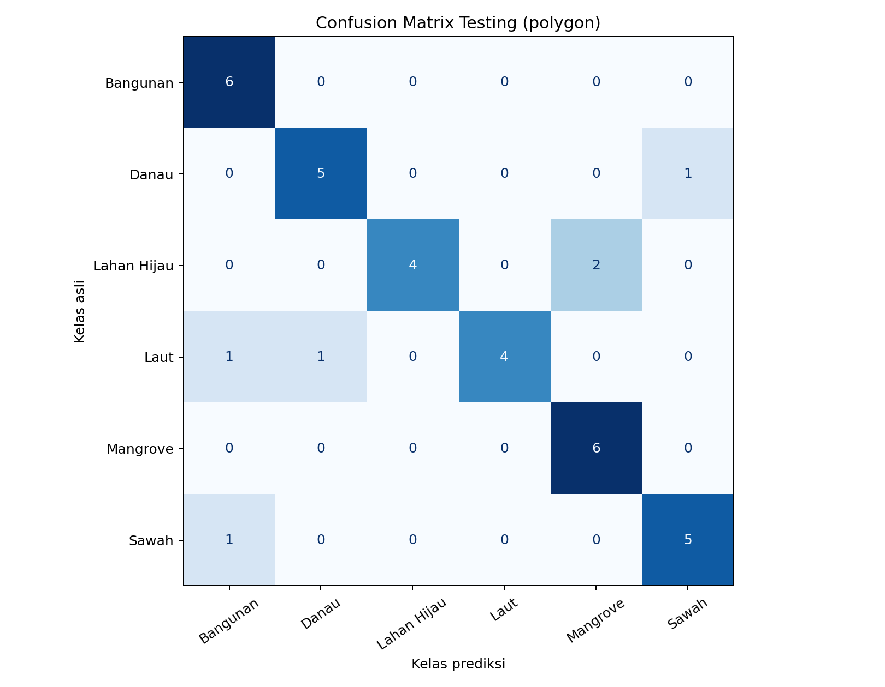
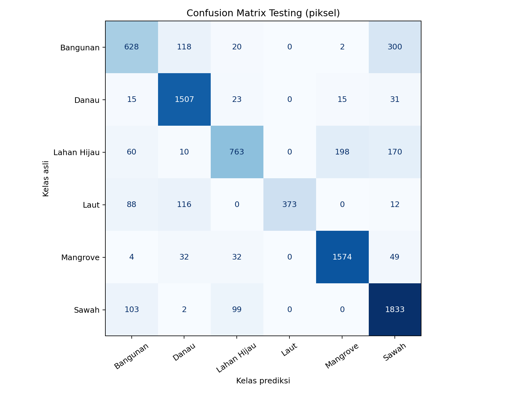

Klasifikasi Lahan Jawa Timur#
1. Tujuan Analisis#
Analisis ini bertujuan mengklasifikasikan lokasi sampel lahan di Jawa Timur menjadi enam kelas, yaitu sawah, bangunan, mangrove, lahan hijau, laut, dan danau.
Analisis penggunaan lahan (land use) membantu memahami pemanfaatan suatu wilayah, misalnya untuk pertanian dan kawasan terbangun. Klasifikasi penutup lahan (land cover classification) membantu membedakan karakteristik permukaan berdasarkan informasi citra satelit.
Hasil klasifikasi dapat menjadi bahan awal untuk kajian pemanfaatan ruang, perlindungan kawasan pertanian, pelestarian mangrove, serta pengamatan badan air. Penetapan kesesuaian terhadap kebijakan tata ruang memerlukan data kebijakan dan batas kawasan yang relevan.
2. Data Understanding#
2.1 Wilayah dan Kelas#
Lokasi sampel berada di wilayah kajian Jawa Timur. Data sampel disimpan dalam file PSD_6_Kelas_Gabungan.geojson.
Setiap polygon memiliki sample_id sebagai identitas dan kelas sebagai label acuan.
Kelas |
Pengertian dalam penelitian |
Jumlah Polygon |
|---|---|---|
Sawah |
Lahan pertanian sawah |
30 |
Bangunan |
Kawasan dengan penutup berupa bangunan atau permukaan terbangun |
30 |
Mangrove |
Vegetasi mangrove di kawasan pesisir |
30 |
Lahan Hijau |
Vegetasi selain sampel sawah dan mangrove |
30 |
Laut |
Perairan laut terbuka |
30 |
Danau |
Badan air danau atau ranu |
30 |
Total |
Enam kelas |
180 |
Lahan hijau merupakan kelompok umum dalam eksperimen ini. Kelas tersebut belum dipecah menjadi hutan, semak, kebun, atau jenis vegetasi lainnya.
2.2 Acuan Klasifikasi Lahan di Indonesia#
Acuan standar yang digunakan untuk pembahasan klasifikasi penutup lahan adalah SNI 7645-1:2014, Klasifikasi penutup lahan — Bagian 1: Skala kecil dan menengah, yang diterbitkan Badan Standardisasi Nasional.
Enam kelas pada penelitian ini merupakan pengelompokan operasional sesuai kebutuhan tugas. Pengelompokan ini bukan salinan lengkap seluruh kelas dan hierarki SNI.
2.3 Sumber Citra#
Citra yang digunakan adalah Sentinel-2A Level-2A dari Copernicus Data Space Ecosystem.
Periode pencarian citra adalah 1 Juni sampai 30 September 2026. Untuk setiap lokasi sampel, pencarian dilakukan berdasarkan lokasi polygon dan ketersediaan citra.
Citra dipilih dengan mempertimbangkan persentase awan pada tile. Setelah diunduh, kualitas piksel di dalam polygon diperiksa kembali. Persentase awan pada tile tidak selalu sama dengan kondisi awan pada lokasi sampel.
Tanggal citra dapat berbeda antarpolygon. Identitas citra dan tanggal pengambilan disimpan dalam metadata masing-masing sampel.
3. Pengumpulan Data#
Pengumpulan data dilakukan melalui langkah berikut:
Membaca GeoJSON yang berisi 180 polygon berlabel.
Mencari citra Sentinel-2A Level-2A pada periode penelitian.
Mengunduh band citra menggunakan Process API.
Menyimpan citra setiap sampel dalam format TIFF.
Menyimpan metadata citra dalam format JSON.
Membuat laporan status pengunduhan.
Folder penyimpanan citra adalah citra_sentinel.
Setiap TIFF memiliki 12 layer, yaitu 10 band reflektansi, satu layer SCL, dan satu layer dataMask.
Seluruh 180 sampel berhasil tersedia setelah proses pengunduhan selesai.
4. Band Sentinel-2A#
Sentinel-2 memiliki 13 band spektral dengan resolusi spasial asli yang berbeda.
Band |
Jenis Spektral |
Resolusi Asli |
Keterangan |
|---|---|---|---|
B01 |
Coastal aerosol |
60 m |
Informasi aerosol dan wilayah pesisir |
B02 |
Blue |
10 m |
Pantulan pada spektrum biru |
B03 |
Green |
10 m |
Pantulan pada spektrum hijau |
B04 |
Red |
10 m |
Pantulan merah untuk analisis vegetasi |
B05 |
Red edge |
20 m |
Karakteristik vegetasi |
B06 |
Red edge |
20 m |
Karakteristik vegetasi |
B07 |
Red edge |
20 m |
Karakteristik vegetasi |
B08 |
Near infrared |
10 m |
Pantulan inframerah dekat |
B8A |
Narrow near infrared |
20 m |
Inframerah dekat dengan rentang lebih sempit |
B09 |
Water vapour |
60 m |
Informasi uap air atmosfer |
B10 |
Cirrus |
60 m |
Deteksi cirrus; tidak tersedia sebagai band reflektansi permukaan pada produk Level-2A |
B11 |
Shortwave infrared 1 |
20 m |
Karakteristik kelembapan dan permukaan |
B12 |
Shortwave infrared 2 |
20 m |
Karakteristik kelembapan dan permukaan |
Band reflektansi yang digunakan sebagai fitur adalah:
B02, B03, B04, B05, B06, B07, B08, B8A, B11, dan B12.
Citra diunduh pada grid 10 meter dalam koordinat UTM. Band yang memiliki resolusi asli 20 meter diresampling ke grid tersebut. Resampling tidak menambah detail spasial asli band.
Dua layer tambahan digunakan untuk pemeriksaan kualitas:
Layer |
Fungsi |
|---|---|
SCL |
Scene Classification Layer untuk menyaring kelas kualitas piksel |
dataMask |
Menunjukkan ketersediaan data pada piksel |
SCL dan dataMask digunakan untuk penyaringan, bukan sebagai fitur model.
5. Penyaringan Piksel#
Piksel yang digunakan harus memenuhi kondisi berikut:
Berada di dalam polygon sampel.
Memiliki
dataMask = 1.Memiliki nilai band yang valid.
Tidak termasuk kelas SCL yang dikeluarkan.
Kelas SCL yang dikeluarkan adalah 0, 1, 3, 8, 9, 10, dan 11, yang mencakup no data, piksel rusak atau jenuh, bayangan awan, awan, cirrus, serta salju atau es.
Setiap polygon diambil maksimal 500 piksel bersih. Jumlah piksel dapat lebih sedikit karena ukuran polygon dan ketersediaan piksel valid.
6. Ekstraksi Fitur#
Model menggunakan 13 fitur per piksel, yaitu 10 band reflektansi dan tiga indeks spektral.
Fitur |
Keterangan |
|---|---|
B02 |
Reflektansi band biru |
B03 |
Reflektansi band hijau |
B04 |
Reflektansi band merah |
B05 |
Reflektansi red edge |
B06 |
Reflektansi red edge |
B07 |
Reflektansi red edge |
B08 |
Reflektansi inframerah dekat |
B8A |
Reflektansi inframerah dekat sempit |
B11 |
Reflektansi SWIR 1 |
B12 |
Reflektansi SWIR 2 |
NDVI |
Indeks vegetasi |
NDWI |
Indeks air |
NDBI |
Indeks yang membantu mengenali kawasan terbangun |
6.1 NDVI#
NDVI (Normalized Difference Vegetation Index) menggunakan band inframerah dekat dan merah.
NDVI membantu membedakan karakteristik vegetasi.
6.2 NDWI#
NDWI (Normalized Difference Water Index) pada penelitian ini menggunakan band hijau dan inframerah dekat.
NDWI membantu mengenali badan air.
6.3 NDBI#
NDBI (Normalized Difference Built-up Index) menggunakan band SWIR dan inframerah dekat.
NDBI membantu membedakan kawasan terbangun. Nilainya juga dapat dipengaruhi tanah terbuka, sehingga tidak digunakan sebagai penentu kelas secara tunggal.
Penyebut yang mendekati nol menghasilkan nilai tidak valid dan dikeluarkan sebelum pemodelan.
6.4 Ringkasan Fitur per Polygon#
Selain dataset piksel, ekstraksi menghasilkan ringkasan mean, median, dan standar deviasi setiap fitur per polygon.
Ringkasan dihitung dari seluruh piksel valid sebelum pembatasan maksimal 500 piksel.
Mean:
Median merupakan nilai tengah setelah data diurutkan. Jika jumlah data genap, median adalah rata-rata dua nilai tengah.
Standar deviasi yang digunakan memakai pembagi \(n\):
Keterangan:
\(x_i\) adalah nilai fitur pada piksel ke-\(i\).
\(n\) adalah jumlah piksel valid.
\(\bar{x}\) adalah rata-rata nilai fitur.
\(\sigma\) adalah standar deviasi.
Ringkasan tersebut disimpan dalam fitur_polygon_sentinel.csv. Model dalam eksperimen ini dilatih menggunakan 13 fitur per piksel, bukan ringkasan statistik polygon.
7. Hasil Ekstraksi#
Seluruh 180 polygon berhasil diekstraksi.
Kelas |
Jumlah Polygon |
Jumlah Piksel Diambil |
|---|---|---|
Sawah |
30 |
9.927 |
Bangunan |
30 |
4.685 |
Mangrove |
30 |
9.509 |
Lahan Hijau |
30 |
6.160 |
Laut |
30 |
2.983 |
Danau |
30 |
8.353 |
Total |
180 |
41.617 |
Jumlah fitur per piksel adalah 13. Dataset hasil ekstraksi memiliki 0 missing value pada fitur.
Jumlah polygon tiap kelas seimbang, tetapi jumlah piksel berbeda. Perbedaan dipengaruhi ukuran polygon dan jumlah piksel yang lolos penyaringan.
8. Pembagian Training dan Testing#
Pembagian dilakukan pada tingkat polygon dengan proporsi 80% training dan 20% testing, menggunakan stratifikasi kelas dan random_state = 42.
Seluruh piksel dari satu polygon masuk ke kelompok yang sama.
Kelas |
Total Polygon |
Training |
Testing |
|---|---|---|---|
Sawah |
30 |
24 |
6 |
Bangunan |
30 |
24 |
6 |
Mangrove |
30 |
24 |
6 |
Lahan Hijau |
30 |
24 |
6 |
Laut |
30 |
24 |
6 |
Danau |
30 |
24 |
6 |
Total |
180 |
144 |
36 |
Kelompok |
Jumlah Polygon |
Jumlah Piksel |
|---|---|---|
Training |
144 |
33.440 |
Testing |
36 |
8.177 |
Total |
180 |
41.617 |
Polygon digunakan sebagai unit pembagian data, sedangkan piksel digunakan sebagai baris input model.
Pembagian ini mencegah piksel dari polygon yang sama masuk ke training dan testing. Namun, pembagian berdasarkan identitas polygon belum menjamin lokasi training dan testing berjauhan secara spasial.
9. Eksperimen Model#
Tiga model dibandingkan:
Random Forest.
Extra Trees.
Hist Gradient Boosting.
Random Forest dan Extra Trees menggunakan 200 pohon. Jumlah pohon merupakan pengaturan model, bukan jumlah sampel.
Extra Trees adalah gabungan banyak pohon keputusan dengan pemilihan pemisahan yang diacak. Karena itu, Extra Trees berbeda dari satu Decision Tree.
Validasi silang dilakukan dalam tiga fold pada 144 polygon training. Pembagian fold dilakukan berdasarkan polygon, lalu piksel mengikuti kelompok polygonnya.
Pada pelatihan, bobot piksel diatur agar setiap polygon memiliki total bobot yang sama.
Prediksi polygon ditentukan dari rata-rata probabilitas kelas seluruh piksel sampelnya:
Keterangan:
\(g\) adalah polygon.
\(c\) adalah kelas.
\(n_g\) adalah jumlah piksel sampel pada polygon.
\(p_{i,c}\) adalah probabilitas kelas \(c\) untuk piksel \(i\).
\(\hat{y}_g\) adalah kelas prediksi polygon.
10. Perbandingan Model#
Hasil berikut merupakan evaluasi validasi silang pada data training.
Model |
Rata-rata Accuracy Polygon |
Standar Deviasi Accuracy |
Macro F1 Polygon |
Accuracy Piksel |
|---|---|---|---|---|
Extra Trees |
79,86% |
4,34 poin persentase |
0,796857 |
75,00% |
Random Forest |
79,86% |
4,34 poin persentase |
0,796596 |
75,08% |
Hist Gradient Boosting |
78,47% |
2,41 poin persentase |
0,782172 |
74,51% |
Extra Trees dan Random Forest memperoleh rata-rata accuracy polygon yang sama. Extra Trees dipilih karena macro F1 polygon sedikit lebih tinggi.
Model terpilih kemudian dilatih ulang menggunakan seluruh data training dan dievaluasi pada data testing.
Pemilihan dilakukan berdasarkan hasil validasi training. Extra Trees merupakan model terbaik di antara konfigurasi yang dicoba pada eksperimen ini.
11. Hasil Testing#
11.1 Evaluasi Polygon#
Model Extra Trees memperoleh hasil berikut pada 36 polygon testing:
Metrik |
Hasil |
|---|---|
Accuracy polygon |
83,33% |
Macro F1 polygon |
0,8302 |
Polygon benar |
30 |
Polygon salah |
6 |
Rumus accuracy:
11.2 Evaluasi Piksel#
Metrik |
Hasil |
|---|---|
Jumlah piksel testing |
8.177 |
Accuracy piksel |
81,67% |
Balanced accuracy piksel |
77,24% |
Macro F1 piksel |
0,7921 |
Precision dan recall dihitung sebagai:
Keterangan untuk setiap kelas:
\(TP\): sampel kelas tersebut yang diprediksi dengan benar.
\(FP\): sampel kelas lain yang diprediksi sebagai kelas tersebut.
\(FN\): sampel kelas tersebut yang diprediksi sebagai kelas lain.
Macro F1 adalah rata-rata F1 seluruh kelas tanpa pembobotan jumlah sampel:
Balanced accuracy adalah rata-rata recall seluruh kelas:
Pada penelitian ini, \(K=6\).
Accuracy piksel dan accuracy polygon dihitung pada unit yang berbeda sehingga nilainya dapat berbeda.
11.3 Confusion Matrix Polygon#


Fig. 4 Confusion matrix model Extra Trees pada 36 polygon testing.#
Baris menunjukkan kelas acuan, sedangkan kolom menunjukkan kelas prediksi.
Angka pada diagonal menunjukkan prediksi benar. Angka di luar diagonal menunjukkan kesalahan klasifikasi.
Sebanyak 30 dari 36 polygon testing diprediksi dengan benar, sedangkan enam polygon diprediksi sebagai kelas lain.
11.4 Confusion Matrix Piksel#


Fig. 5 Confusion matrix model Extra Trees pada 8.177 piksel testing.#
Evaluasi ini dihitung pada tingkat piksel. Accuracy piksel sebesar 81,67%, balanced accuracy sebesar 77,24%, dan macro F1 sebesar 0,7921.
12. Peta Hasil Klasifikasi#
Peta berikut menampilkan prediksi kelas pada 180 lokasi sampel menggunakan Folium, yang menghasilkan peta berbasis Leaflet.
Pilih Satelit Esri pada kontrol layer untuk melihat latar citra satelit.
Warna menunjukkan kelas prediksi. Layer training dan testing dapat ditampilkan atau disembunyikan. Layer label acuan dapat diaktifkan untuk perbandingan.
Lingkaran testing dengan bingkai merah muda menunjukkan prediksi yang berbeda dari label acuan.
Perbesar peta untuk melihat bentuk polygon, lalu klik sampel untuk membaca informasi kelas.
Peta ini menampilkan lokasi sampel, bukan klasifikasi seluruh tutupan lahan Jawa Timur.
Latar yang digunakan saat ini adalah Esri World Imagery. Penggunaan latar ini belum memenuhi secara khusus permintaan WMS atau satelit Google Maps.
13. File dan Kode Pengolahan#
File |
Fungsi |
|---|---|
PSD_6_Kelas_Gabungan.geojson |
Polygon dan label acuan |
unduh_sentinel_semua.py |
Pengunduhan citra setiap sampel |
ekstraksi_fitur_sentinel.py |
Penyaringan piksel dan ekstraksi fitur |
klasifikasi_sentinel.py |
Pembagian data, eksperimen model, dan evaluasi |
buat_peta_hasil.py |
Pembuatan peta hasil prediksi |
hasil_ekstraksi/dataset_piksel_sentinel.csv |
Dataset 13 fitur per piksel |
hasil_ekstraksi/fitur_polygon_sentinel.csv |
Ringkasan statistik fitur per polygon |
hasil_klasifikasi/perbandingan_model.csv |
Hasil perbandingan model |
hasil_klasifikasi/prediksi_testing_polygon.csv |
Prediksi polygon testing |
hasil_klasifikasi/hasil_evaluasi.json |
Ringkasan evaluasi |
hasil_klasifikasi/model_terbaik.joblib |
Model terpilih dan informasi fitur |
_static/confusion_matrix_polygon.png |
Gambar evaluasi polygon |
_static/confusion_matrix_piksel.png |
Gambar evaluasi piksel |
_static/peta_klasifikasi_sentinel.html |
Peta interaktif |
Kode pengolahan dijalankan di VS Code. Halaman web statis menyajikan proses dan hasil yang sudah diperoleh.
14. Status Sistem Informasi#
Peta HTML telah berhasil dibuat dan ditampilkan pada halaman web statis PSD.
Deploy sistem informasi ke Streamlit masih merupakan tahap berikutnya. Halaman ini merupakan dokumentasi pada web statis PSD.
15. Referensi#
Badan Standardisasi Nasional. SNI 7645-1:2014, Klasifikasi penutup lahan — Bagian 1: Skala kecil dan menengah. Katalog BSN.
Copernicus Data Space Ecosystem. Sentinel-2 Level-2A.
Copernicus Data Space Ecosystem. Sentinel-2 Level-1C.
Scikit-learn. Ensemble methods.